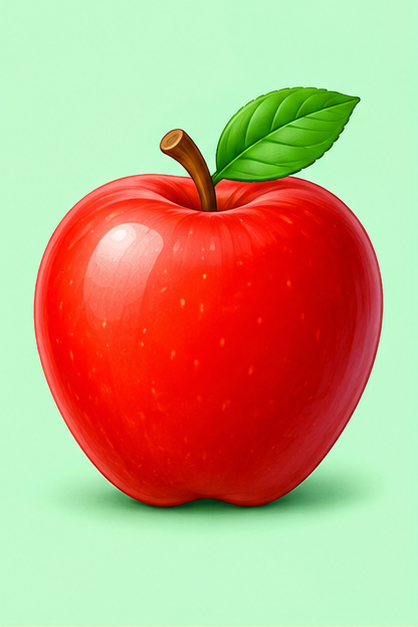

Articles: A, AN, THE
Learn how to use English articles with simple explanations, examples, translations and interactive tests.
01. What are Articles?
02. Article A
I have a book.
Mənim bir kitabım var.
У меня есть книга.
She is a teacher.
O, müəllimdir.
Она учительница.
He has a car.
Onun bir maşını var.
У него есть машина.
03. Article AN


I eat an apple.
Mən bir alma yeyirəm.
Я ем яблоко.
She has an umbrella.
Onun bir çətiri var.
У неё есть зонт.
He is an actor.
O, aktyordur.
Он актёр.
04. A or AN?
A
a dog · a book · a teacher · a house · a student · a carAN
an apple · an egg · an elephant · an orange · an umbrella · an animal⚠️ Important exceptions
A university — bir universitet — университет (starts with "yu" sound)
A uniform — bir uniforma — форма (starts with "yu" sound)
An hour — bir saat — час (H is silent)
An honest man — dürüst kişi — честный человек (H is silent)
05. Article THE
I have an apple. The apple is red.
Mənim bir almam var. Alma qırmızıdır.
У меня есть яблоко. Яблоко красное.
Where is the ball?
Top haradadır?
Где мяч?
The cat is on the chair.
Pişik stulun üstündədir.
Кошка на стуле.
06. First mention & Second mention
I see a dog. The dog is black.
Mən bir it görürəm. Həmin it qaradır.
Я вижу собаку. Эта собака чёрная.
She has an umbrella. The umbrella is blue.
Onun bir çətiri var. Həmin çətir mavidir.
У неё есть зонт. Этот зонт синий.
There is a book on the table. The book is interesting.
Masanın üstündə bir kitab var. Həmin kitab maraqlıdır.
На столе есть книга. Эта книга интересная.
07. THE with unique things
The sun is hot. — Günəş istidir. — Солнце горячее.
The sky is blue. — Səma mavidir. — Небо голубое.
The moon is beautiful. — Ay gözəldir. — Луна красивая.
08. THE with specific places
Go to the door. — Qapıya get. — Иди к двери.
Open the window. — Pəncərəni aç. — Открой окно.
Close the book. — Kitabı bağla. — Закрой книгу.
The teacher is in the classroom. — Müəllim sinifdədir. — Учитель в классе.
The kitchen is clean. — Mətbəx təmizdir. — Кухня чистая.
09. A / AN with jobs
I am a teacher. — Mən müəlliməm. — Я учитель.
He is a doctor. — O, həkimdir. — Он врач.
She is a nurse. — O, tibb bacısıdır. — Она медсестра.
He is an actor. — O, aktyordur. — Он актёр.
She is an artist. — O, rəssamdır. — Она художница.
He is an engineer. — O, mühəndisdir. — Он инженер.
10. THE + Plural nouns
The students are in the classroom.
Şagirdlər sinifdədirlər.
Ученики в классе.
The books are on the table.
Kitablar masanın üstündədir.
Книги на столе.
The children are happy.
Uşaqlar xoşbəxtdirlər.
Дети счастливы.
11. No A / AN with plural nouns
Incorrect ❌
a booksan apples
a students
Correct ✅
booksapples
students
I have books. — Mənim kitablarım var. — У меня есть книги.
They are students. — Onlar şagirddirlər. — Они ученики.
We have apples. — Bizim almalarımız var. — У нас есть яблоки.
12. A / AN with uncountable nouns
Incorrect ❌
a wateran milk
a rice
Correct ✅
watermilk
rice
I drink water. — Mən su içirəm. — Я пью воду.
She likes milk. — O, südü sevir. — Она любит молоко.
We eat rice. — Biz düyü yeyirik. — Мы едим рис.
Quantity expressions
a glass of water — bir stəkan su — стакан воды
a cup of tea — bir fincan çay — чашка чая
a bottle of milk — bir şüşə süd — бутылка молока
a piece of bread — bir parça çörək — кусок хлеба
13. A / AN vs THE
A / AN
a cata house
an apple
a teacher
THE
the catthe house
the apple
the teacher
I see a girl. — Mən bir qız görürəm. — Я вижу девочку.
The girl is happy. — Həmin qız xoşbəxtdir. — Эта девочка счастлива.
He buys a phone. — O, bir telefon alır. — Он покупает телефон.
The phone is expensive. — Həmin telefon bahadır. — Этот телефон дорогой.
14. When do we NOT use articles?
I like cats. — Mən pişikləri sevirəm. — Я люблю кошек.
Dogs are friendly. — İtlər mehribandır. — Собаки дружелюбные.
Children like chocolate. — Uşaqlar şokoladı sevirlər. — Дети любят шоколад.
I drink coffee. — Mən kofe içirəm. — Я пью кофе.
She likes music. — O, musiqini sevir. — Она любит музыку.
General
I like dogs.Mən itləri sevirəm.
Specific
I like the dogs.Mən həmin itləri sevirəm.
15. Quick Summary
A
+ consonant sound
a book · a car · a dogBir / hər hansı birAN
+ vowel sound
an apple · an egg · an hourBir / hər hansı birTHE
+ specific noun
the book · the sun · the teacherKonkret, məlum olan—
+ general plural / uncountable
books · dogs · water · musicÜmumi mənada16. Common Mistakes
Incorrect ❌
a applean book
a elephants
an water
She is teacher.
He has an car.
Correct ✅
an applea book
elephants
water
She is a teacher.
He has a car.
17. Practice Tests
Complete each test and check your score.